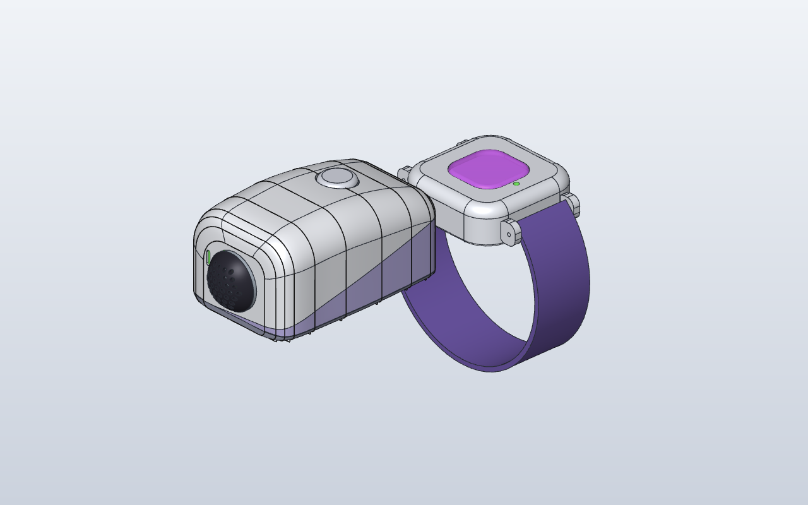
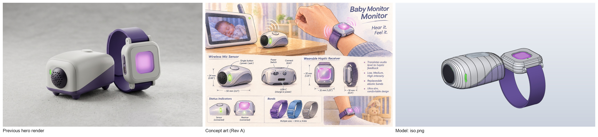
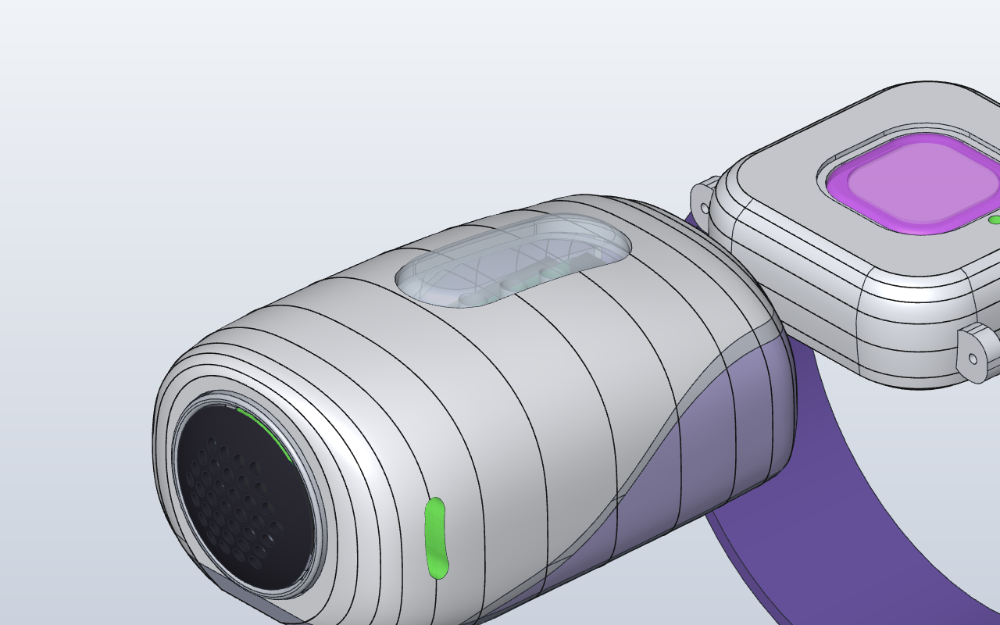
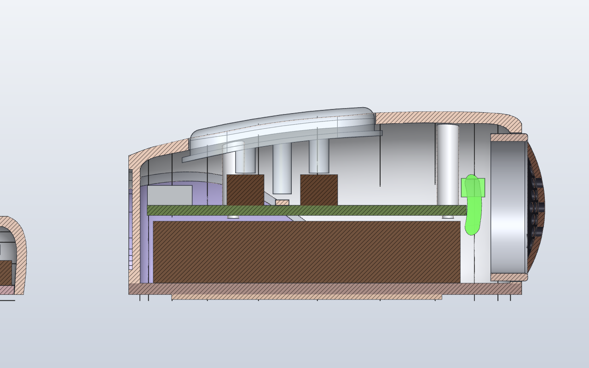
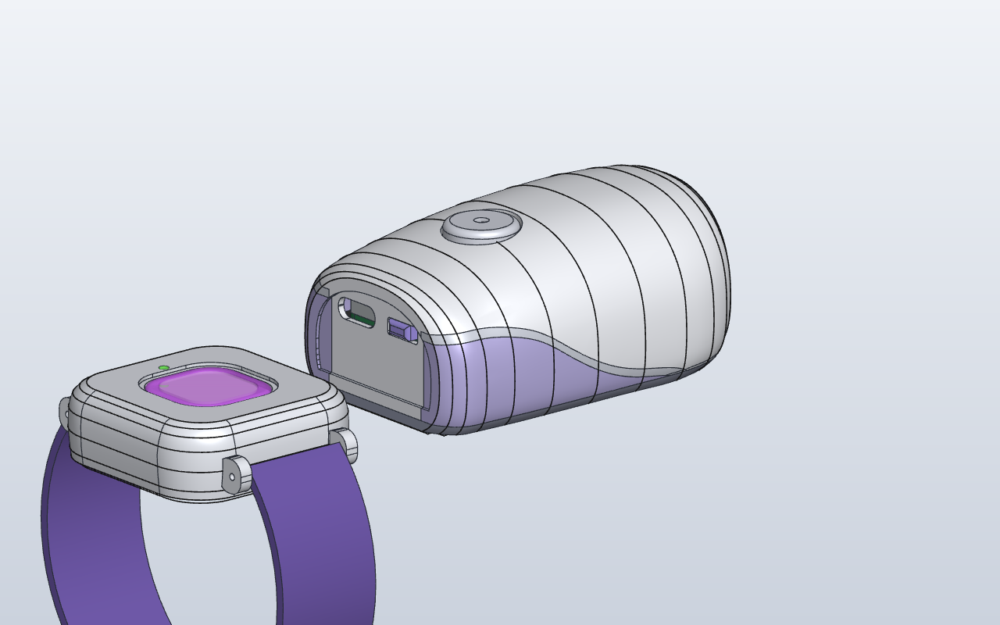
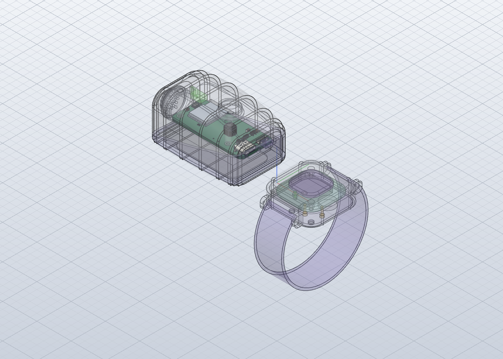

Two parents, one bed, one on duty
The one on duty wears it. The one off duty gets to sleep.
Earplugs in, and still listening
The monitor's hiss, a snoring partner or the street outside keeps them awake, but earplugs feel like neglect. With the watch on, they can block out the room and still be the first to know when the baby actually needs them. A whimper only makes the watch glow. Crying buzzes it, harder the longer nobody gets up.
Can't find a tiny button in the dark
Rev A had a 12 mm button. The hosts asked for something you can hit half-asleep without looking, like the snooze bar on an alarm clock. Rev B's bar is 30 mm long, works when pressed anywhere along it, and always glows faintly so you can see where it is. Tap it and the watch stops.

"Bzz-bzz-bzz. … BZZZ."3:12 am. Three firm pulses, then a full buzz. A hand finds the amber glow on the nightstand, taps the bar, and the watch flashes green and goes quiet.
Tap the bar, stop the buzz
This runs the Rev B firmware's own rules, ported line for line from detector.c, haptic.c and the two main.c files. Pick what the monitor is playing and watch the sensor sort it into a level. Then tap the snooze bar on the sensor to stop the watch, or hold it for 3 seconds to send a test buzz.
The monitor is playing
White-noise machine
Clock
Last 20 s on screen. Line: what the sensor hears (dB SPL). Dashed: its noise floor. Faint lines: the fussing, crying and screaming thresholds. Bottom strip: the watch motor.
All quiet
This is a simulation in your browser, not the device, and the sounds are made up. The thresholds, attack and release, 45 s escalation, 3 min snooze and the buzz patterns are the firmware's real numbers, all still waiting for bench tuning. The light colours are brightened for the screen; the real bar's "armed" glow is a dim night-light. The phone in your hand doesn't buzz: there's no ERM in it. The white-noise machine shows a bug we found while building this page, now fixed in the firmware: switch it on, then let 20 s pass (see what we still don't know).
Closer to the concept: curves, asymmetry, details
Rev A's two enclosures, re-lofted around the same parts. Every board position stayed put; the outsides were redrawn from the concept art. Drag to spin it.
- A teardrop, not a boxThe sensor is lofted through 14 spline cross-sections: a round nose, the crown just behind it, then one long fall to the back. Its −y side is fuller, with a rounder shoulder, so it isn't symmetric. 64 × 44.3 × 29.8 mm, sized by the 2000 mAh cell inside.
- Grille nose and green beanA 24 mm chrome bezel ring fills the nose, holding a shallow honeycomb dome over the mic. The status light moved from a slit on the nose to the concept's kidney-bean window on the cheek, fed by a light pipe from the same board LED.
- S-curve swooshThe lavender side panels sit below an S-curve that starts under the bezel and rises toward the back, a different curve on each side, with a bright trim band along the top. Rev A split the colours along a flat, tilted plane.
- The snooze barA 30 × 12 mm clear acrylic bar along the crown, 1 mm proud. A flange keeps it in, two plunger legs sit on two switches, and a light leg carries an RGB LED's glow up into it.
- A pillow watchThe watch case is lofted too: its sides bulge to 38.6 mm a third of the way up and roll into a flat bezel. The lens sits in a stepped recess, with a magenta ring round a paler centre. The lugs are smaller, so the band tucks under. It's still sealed, with no buttons and no port.
Two boards, one link, one big button
Each device has its own routed two-layer board with an ESP32-C6 module, and they talk directly over ESP-NOW. The sensor board was re-placed and re-routed for the snooze bar. The watch board's circuit is unchanged from Rev A.
Sensor board52 × 24 mm
Watch board30 × 30 mm
Press it anywhere
New in Rev B. A long bar would rock on one switch, so two switches 12 mm apart sit in parallel on the same pin. A press at either end registers, and either one wakes the chip.
The bar's glow
New in Rev B. A 2 mm RGB LED between the switches, under the bar's light leg. It runs from the power switch's output through a Schottky diode, so 3.3 V data still reads high, and it draws nothing when the sensor is off.
Two brains, no router
ESP-NOW links the two ESP32s directly, with no Wi-Fi network, no app and no account. The sensor decides everything and the watch just follows, so the two can never disagree about whether to buzz.
Ears
A digital I2S MEMS mic behind the grille. The firmware filters it to roughly the band a cry occupies through a small speaker (~330 Hz to 3.7 kHz) and measures the level every 250 ms.
The buzz
A Ø10 mm coin motor on a 20 kHz PWM. The firmware divides by the battery voltage, so a buzz feels the same on a full cell as on a tired one and the 3 V motor is never over-driven.
Sensor power
USB-C runs the sensor beside the monitor and charges a 2000 mAh cell for nights away. The hosts kept the long cell on purpose: about three nights unplugged is a bonus for parents.
Sensor bill of materials (23 lines)
Watch bill of materials (19 lines)
- Sensor schematic (KiCad)
- Sensor board (KiCad)
- Watch schematic (KiCad)
- Watch board (KiCad)
- Enclosures (STEP)
- How the two devices work together
- Firmware notes
The firmware
New in Rev B: one PlatformIO project per device, sharing a radio protocol. Both compile, but neither has run on hardware yet.
A level from 0 to 3, not just "loud"
The sensor learns the room's noise floor and needs sound well above it before it calls fussing, crying or screaming. It needs 1 s of sound within 2 s, so a door slam doesn't count, and it steps down one level per 6 s, so the breaths between cries don't end an alert. A sound that stays within 4 dB for 20 s, like a white-noise machine, becomes the new background.
Glow, pulse, buzz
Fussing only glows soft pink (the hosts' call). Crying gives three firm pulses every 2.5 s. Screaming gives an almost continuous full buzz. A crying alert nobody answers steps up to screaming after 45 s. A tap on the bar stops it for 3 min, unless the crying gets louder.
ESP-IDF 5.5, 0 warnings
Not Arduino: the pinned platform's Arduino core can't target the ESP32-C6. Each device builds to ~815 KB of a 1.875 MB slot, with room for over-the-air updates later. A host test runs the real detector and buzz code on a computer (26 checks pass).
Code and board can't disagree
pins.h is generated from each board's KiCad design script before every build, and the build stops if a net or pull-up the code relies on disappears.
How we got here
Rev A came out of episode 003. The hosts said "keep building" and set one goal for Rev B: make the enclosures a truer representation of the concept art, with its curves, asymmetry and details.
-

Rev A · Episode 003 · Nov 2026Hear it, feel it
- Mic sensor next to the monitor, buzzing watch on the wrist, linked by ESP-NOW
- 63 × 43 × 33 mm "gamer mouse" sensor with an SM58-style ball grille
- Sealed 38 mm watch: no button, no port, charged on a magnetic clip
- Two routed ESP32-C6 boards, DRC 0 / 0
Verdict: keep building. See the Rev A page
-
Rev B · This page · Nov 2026
Closer to the concept, easier at 3 am
- Sensor re-lofted through spline sections: a low, asymmetric teardrop
- Chrome-ringed grille nose, kidney-bean status light, S-curve swoosh with a trim band
- Pillow watch with a recessed two-tone lens and smaller lugs
- Glowing 30 mm snooze bar on two switches, replacing the 12 mm button
- Sensor board re-routed (DRC 0 / 0), and both boards pass the fit check
- First firmware for both devices: builds clean, not yet on hardware
-
Rev C · Not started
Build one, and finish the pebble
Nothing has been made yet. The next step is two boards on the bench, the firmware flashed and a real monitor playing real crying. On the CAD side, a second pass with a steeper fall to the back is written but not built.



Snooze barThe clear bar on the crown 
InsideA section along the bar: two legs, two switches, one light 
The backInset panel, USB-C and slider (before the bar) 
Fit checkThe real sensor board in its case: pass


What we still don't know
Rev B answers Rev A's fit-check and firmware questions on paper. Here's what we'd still answer before anyone orders a board or cuts a mould.
- Prototype
Designed, checked, never built
Both boards are DRC-clean and fit their cases, and the firmware compiles, but nothing has been made or flashed. Every sound threshold and buzz strength is a first guess, waiting for a real board, a real monitor and recorded crying.
- Hearing
Is crying ever as steady as white noise?
While building the demo above we found that a white-noise machine switched on after the sensor was never learned as background: the watch glowed or buzzed all night. That's fixed. A sound that stays within 4 dB for 20 s now becomes the background, up to 62 dB, so an unbroken scream never does. It rests on crying through a monitor swinging 10–20 dB with breaths and sobs, which still needs checking against recordings of real crying. It has two costs: when a machine switches on, the watch alerts for about 20 s before the sensor learns it, and over the noise, crying has to be 10 dB louder to glow and 18 dB louder to buzz.
- Battery
Does 150 mAh last a whole night?
The watch listens 50 ms in every 200 ms, so the estimate is ~11 mA, or about 13 h. That's untested. The glow LED also draws up to 1 mA when dark. A switch to cut its power is posted as a request for the board, along with a charger sense, so a full watch on its clip stops buzzing "link lost".
- Shape
Still a little long for a pebble
The sensor reads longer and more tube-like than the concept, because its 50 mm cell sets the length (the hosts chose to keep it), and the inset back panel is too big. A second pass with a steeper fall to the back is written but not built: it ran over an hour without finishing.
- Watch
12.7 mm thick, not 10
The concept's watch is about 10 mm thick. Ours is set by the cell and board stack. A 1.0 mm board and a 3 mm cell would win back about 1.5 mm.
- Light
Is a 22 mm light pipe bright enough?
The status bean moved to the cheek, but its LED didn't move on the board, so the light travels about 22 mm to get there. If it looks dim on a real part, the LED moves toward the front of the board.
- Security
No encryption yet
ESP-NOW packets aren't encrypted, so a nearby device could pretend to be the sensor and say "all quiet". A key set at pairing is the next step. Over-the-air updates for the sealed watch are planned in the partition table, but not written.
- Finish
Chrome that doesn't block the radio
Still true from Rev A: real metal plating on the bezel and trim would shield the 2.4 GHz antennas, so the chrome look has to be non-conductive vacuum metallising or pearl paint.